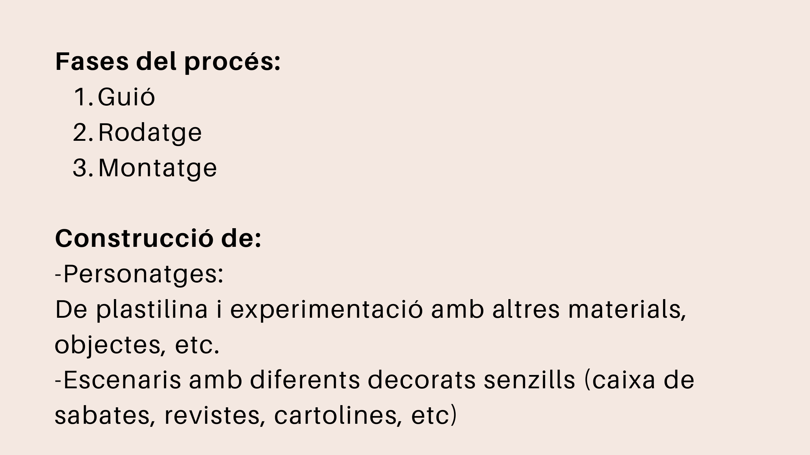
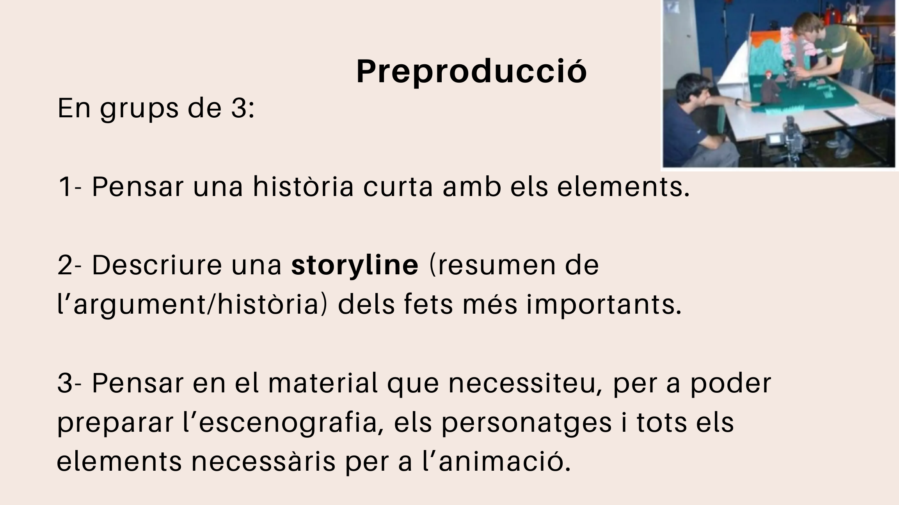

Fases del procés
Un projecte de stop motion es pot organitzar en tres grans fases:
- Guió
- Rodatge
- Muntatge

1. Guió
En aquesta fase es concreta la idea principal i es decideix què passarà en la història.
Cal pensar:
- quin és el personatge principal;
- on passa l'acció;
- quin problema apareix;
- com acaba la història;
- quins materials necessitem.
2. Rodatge
En el rodatge es fan totes les fotografies necessàries.
Perquè el resultat siga correcte, cal:
- col·locar bé la càmera;
- mantindre la mateixa llum;
- moure els personatges molt poc entre fotografia i fotografia;
- evitar que apareguen mans o objectes no desitjats;
- fer més fotos de les que pensem que necessitarem.
3. Muntatge
En el muntatge s'ordenen les fotografies i es converteixen en vídeo.
També es poden afegir:
- música;
- efectes de so;
- títols;
- crèdits;
- text explicatiu;
- transicions senzilles.
Preproducció
Abans de començar el rodatge, cada grup hauria de preparar una storyline i un xicotet storyboard.

Exemple de storyline
Un personatge de plastilina troba una caixa misteriosa. Quan l'obri, apareix un objecte màgic que transforma l'escenari. Finalment, el personatge decideix utilitzar-lo per ajudar un altre company.